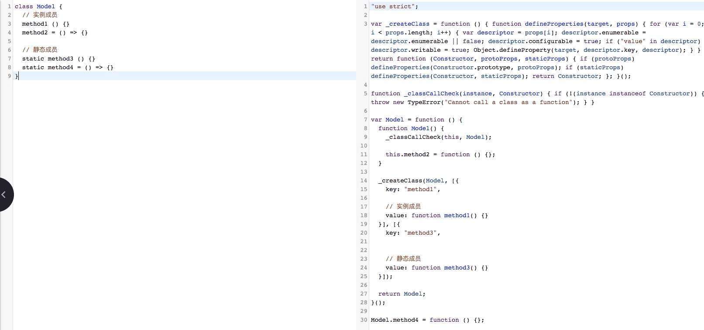
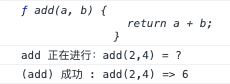

原文连接:https://www.cnblogs.com/Nealyang/p/11582781.html
前言

ES6 已经不必在过多介绍，在 ES6 之前，装饰器可能并没有那么重要，因为你只需要加一层 wrapper 就好了，但是现在，由于语法糖 class 的出现，当我们想要去在多个类之间共享或者扩展一些方法的时候，代码会变得错综复杂，难以维护，而这，也正式我们 Decorator 的用武之地。
Object.defineProperty
关于 Object.defineProperty 简单的说，就是该方法可以精准的添加和修改对象的属性
语法
Object.defineProperty(obj,prop,descriptor)
- ojb:要在其上定义属性的对象
- prop:要定义或修改的属性的名称
- descriptor:将被定义或修改的属性描述符
该方法返回被传递给函数的对象
在ES6中，由于 Symbol类型的特殊性，用Symbol类型的值来做对象的key与常规的定义或修改不同，而Object.defineProperty 是定义key为Symbol的属性的方法之一。
通过赋值操作添加的普通属性是可枚举的，能够在属性枚举期间呈现出来（for...in 或 Object.keys 方法）， 这些属性的值可以被改变，也可以被删除。这个方法允许修改默认的额外选项（或配置）。默认情况下，使用 Object.defineProperty() 添加的属性值是不可修改的
属相描述符
对象里目前存在的属性描述符有两种主要形式：数据描述符和存取描述符。数据描述符是一个具有值的属性，该值可能是可写的，也可能不是可写的。存取描述符是由getter-setter函数对描述的属性。描述符必须是这两种形式之一；不能同时是两者。
数据描述符和存取描述符均具有以下可选键值：
configurable
当且仅当该属性的 configurable 为 true 时，该属性描述符才能够被改变，同时该属性也能从对应的对象上被删除。默认为 false
enumerable
当且仅当该属性的enumerable为true时，该属性才能够出现在对象的枚举属性中。默认为 false。
数据描述符同时具有以下可选键值：
value
该属性对应的值。可以是任何有效的 JavaScript 值（数值，对象，函数等）。默认为 undefined。
writable
当且仅当该属性的writable为true时，value才能被赋值运算符改变。默认为 false
存取描述符同时具有以下可选键值：
get
一个给属性提供 getter 的方法，如果没有 getter 则为 undefined。当访问该属性时，该方法会被执行，方法执行时没有参数传入，但是会传入this对象（由于继承关系，这里的this并不一定是定义该属性的对象）。默认为 undefined。
set
一个给属性提供 setter 的方法，如果没有 setter 则为 undefined。当属性值修改时，触发执行该方法。该方法将接受唯一参数，即该属性新的参数值。默认为 undefined。
如果一个描述符不具有value,writable,get 和 set 任意一个关键字，那么它将被认为是一个数据描述符。如果一个描述符同时有(value或writable)和(get或set)关键字，将会产生一个异常
更多使用实例和介绍，参看：MDN
装饰者模式
在看Decorator之前，我们先看下装饰者模式的使用，我们都知道，装饰者模式能够在不改变对象自身基础上，在程序运行期间给对象添加指责。特点就是不影响之前对象的特性，而新增额外的职责功能。
like...this:
这段比较简单，直接看代码吧：
let Monkey = function () {}
Monkey.prototype.say = function () {
console.log('目前我只是个野猴子');
}
let TensionMonkey = function (monkey) {
this.monkey = monkey;
}
TensionMonkey.prototype.say = function () {
this.monkey.say();
console.log('带上紧箍咒，我就要忘记世间烦恼!');
}
let monkey = new TensionMonkey(new Monkey());
monkey.say();执行结果：
Decorator
Decorator其实就是一个语法糖，背后其实就是利用es5的Object.defineProperty(target,name,descriptor),了解Object.defineProperty请移步这个链接:MDN文档
其背后原理大致如下：
class Monkey{
say(){
console.log('目前，我只是个野猴子');
}
}执行上面的代码，大致代码如下：
Object.defineProperty(Monkey.prototype,'say',{
value:function(){console.log('目前，我只是个野猴子')},
enumerable:false,
configurable:true,
writable:true
})如果我们利用装饰器来修饰他
class Monkey{
@readonly
say(){console.log('现在我是只读的了')}
}在这种装饰器的属性，会在Object.defineProperty为Monkey.prototype注册say属性之前，执行以下代码：
let descriptor = {
value:specifiedFunction,
enumerable:false,
configurable:true,
writeable:true
};
descriptor = readonly(Monkey.prototype,'say',descriptor)||descriptor;
Object.defineProperty(Monkey.prototype,'say',descriptor);从上面的伪代码我们可以看出，Decorator只是在Object.defineProperty为Monkey.prototype注册属性之前，执行了一个装饰函数，其属于一个类对Object.defineProperty的拦截。所以它和Object.defineProperty具有一致的形参：
- obj：作用的目标对象
- prop:作用的属性名
- descriptor:针对该属性的描述符
下面看下简单的使用
在class中的使用
- 创建一个新的class继承自原有的class，并添加属性
@name
class Person{
sayHello(){
console.log(`hello ,my name is ${this.name}`)
}
}
function name(constructor) {
return class extends constructor{
name="Nealyang"
}
}
new Person().sayHello()
//hello ,my name is Nealyang- 针对当前class修改(类似mixin)
@name
@seal
class Person {
sayHello() {
console.log(`hello ,my name is ${this.name}`)
}
}
function name(constructor) {
Object.defineProperty(constructor.prototype,'name',{
value:'一凨'
})
}
new Person().sayHello()
//若修改一个属性
function seal(constructor) {
let descriptor = Object.getOwnPropertyDescriptor(constructor.prototype, 'sayHello')
Object.defineProperty(constructor.prototype, 'sayHello', {
...descriptor,
writable: false
})
}
new Person().sayHello = 1;// Cannot assign to read only property 'sayHello' of object '#<Person>'上面说到mixin，那么我就来模拟一个mixin吧
class A {
run() {
console.log('我会跑步!')
}
}
class B {
jump() {
console.log('我会跳!')
}
}
@mixin(A, B)
class C {}
function mixin(...args) {
return function (constructor) {
for (const arg of args) {
for (let key of Object.getOwnPropertyNames(arg.prototype)) {
if (key === 'constructor') continue;
Object.defineProperty(constructor.prototype, key, Object.getOwnPropertyDescriptor(arg.prototype, key));
}
}
}
}
let c = new C();
c.jump();
c.run();
// 我会跳!
// 我会跑步!截止目前我們貌似写了非常多的代码了，对。。。这篇，为了彻底搞投Decorator，这。。。只是开始。。。
在class成员中的使用
这类的装饰器的写法应该就是我们最为熟知了，会接受三个参数:
- 如果装饰器挂载在静态成员上，则会返回构造函数，如果挂载在实例成员上，则返回类的原型
- 装饰器挂载的成员名称
- Object.getOwnPropertyDescriptor的返回值
首先，我们明确下静态成员和实例成员的区别
class Model{
//实例成员
method1(){}
method2 = ()=>{}
// 靜態成員
static method3(){}
static method4 = ()=>{}
}method1 和method2 是实例成员，但是method1存在于prototype上，method2只有实例化对象以后才有。
method3和method4是静态成员，两者的区别在于是否可枚举描述符的设置，我们通过babel转码可以看到：

上述代码比较乱，简单的可以理解为：
function Model () {
// 成员仅在实例化时赋值
this.method2 = function () {}
}
// 成员被定义在原型链上
Object.defineProperty(Model.prototype, 'method1', {
value: function () {},
writable: true,
enumerable: false, // 设置不可被枚举
configurable: true
})
// 成员被定义在构造函数上，且是默认的可被枚举
Model.method4 = function () {}
// 成员被定义在构造函数上
Object.defineProperty(Model, 'method3', {
value: function () {},
writable: true,
enumerable: false, // 设置不可被枚举
configurable: true
})可以看出，只有method2是在实例化时才赋值的，一个不存在的属性是不会有descriptor的，所以这就是为什么在针对Property Decorator不传递第三个参数的原因，至于为什么静态成员也没有传递descriptor，目前没有找到合理的解释，但是如果明确的要使用，是可以手动获取的。
就像上述的示例，我们针对四个成员都添加了装饰器以后，method1和method2第一个参数就是Model.prototype，而method3和method4的第一个参数就是Model。
class Model {
// 实例成员
@instance
method1 () {}
@instance
method2 = () => {}
// 静态成员
@static
static method3 () {}
@static
static method4 = () => {}
}
function instance(target) {
console.log(target.constructor === Model)
}
function static(target) {
console.log(target === Model)
}函数、访问器、属性 三者装饰器的使用
- 函数装饰器的返回值会默认作为属性的value描述符的存在，如果返回为undefined则忽略
class Model {
@log1
getData1() {}
@log2
getData2() {}
}
// 方案一，返回新的value描述符
function log1(tag, name, descriptor) {
return {
...descriptor,
value(...args) {
let start = new Date().valueOf()
try {
return descriptor.value.apply(this, args)
} finally {
let end = new Date().valueOf()
console.log(`start: ${start} end: ${end} consume: ${end - start}`)
}
}
}
}
// 方案二、修改现有描述符
function log2(tag, name, descriptor) {
let func = descriptor.value // 先获取之前的函数
// 修改对应的value
descriptor.value = function (...args) {
let start = new Date().valueOf()
try {
return func.apply(this, args)
} finally {
let end = new Date().valueOf()
console.log(`start: ${start} end: ${end} consume: ${end - start}`)
}
}
}- 访问器的Decorator就是
getset前缀函数了，用于控制属性的赋值、取值操作，在使用上和函数装饰器没有任何区别
class Modal {
_name = 'Niko'
@prefix
get name() { return this._name }
}
function prefix(target, name, descriptor) {
return {
...descriptor,
get () {
return `wrap_${this._name}`
}
}
}
console.log(new Modal().name) // wrap_Niko- 对于属性装饰器是没有descriptor返回的，并且装饰器函数的返回值也会被忽略，如果我们需要修改某一个静态属性，则需要自己获取descriptor
class Modal {
@prefix
static name1 = 'Niko'
}
function prefix(target, name) {
let descriptor = Object.getOwnPropertyDescriptor(target, name)
Object.defineProperty(target, name, {
...descriptor,
value: `wrap_${descriptor.value}`
})
}
console.log(Modal.name1) // wrap_Niko对于一个实例的属性，则没有直接修改的方案，不过我们可以结合着一些其他装饰器来曲线救国。
比如，我们有一个类，会传入姓名和年龄作为初始化的参数，然后我们要针对这两个参数设置对应的格式校验
const validateConf = {} // 存储校验信息
@validator
class Person {
@validate('string')
name
@validate('number')
age
constructor(name, age) {
this.name = name
this.age = age
}
}
function validator(constructor) {
return class extends constructor {
constructor(...args) {
super(...args)
// 遍历所有的校验信息进行验证
for (let [key, type] of Object.entries(validateConf)) {
if (typeof this[key] !== type) throw new Error(`${key} must be ${type}`)
}
}
}
}
function validate(type) {
return function (target, name, descriptor) {
// 向全局对象中传入要校验的属性名及类型
validateConf[name] = type
}
}
new Person('Niko', '18') // throw new error: [age must be number]
函数参数装饰器
const parseConf = {}
class Modal {
@parseFunc
addOne(@parse('number') num) {
return num + 1
}
}
// 在函数调用前执行格式化操作
function parseFunc (target, name, descriptor) {
return {
...descriptor,
value (...arg) {
// 获取格式化配置
for (let [index, type] of parseConf) {
switch (type) {
case 'number': arg[index] = Number(arg[index]) break
case 'string': arg[index] = String(arg[index]) break
case 'boolean': arg[index] = String(arg[index]) === 'true' break
}
return descriptor.value.apply(this, arg)
}
}
}
}
// 向全局对象中添加对应的格式化信息
function parse(type) {
return function (target, name, index) {
parseConf[index] = type
}
}
console.log(new Modal().addOne('10')) // 11
Decorator 用例
log
为一个方法添加 log 函数，检查输入的参数
let log = type => {
return (target,name,decorator) => {
const method = decorator.value;
console.log(method);
decorator.value = (...args) => {
console.info(`${type} 正在进行：${name}(${args}) = ?`);
let result;
try{
result = method.apply(target,args);
console.info(`(${type}) 成功 : ${name}(${args}) => ${result}`);
}catch(err){
console.error(`(${type}) 失败: ${name}(${args}) => ${err}`);
}
return result;
}
}
}
class Math {
@log('add')
add(a, b) {
return a + b;
}
}
const math = new Math();
// (add) 成功 : add(2,4) => 6
math.add(2, 4);
time
用于统计方法执行的时间:
function time(prefix) {
let count = 0;
return function handleDescriptor(target, key, descriptor) {
const fn = descriptor.value;
if (prefix == null) {
prefix = `${target.constructor.name}.${key}`;
}
if (typeof fn !== 'function') {
throw new SyntaxError(`@time can only be used on functions, not: ${fn}`);
}
return {
...descriptor,
value() {
const label = `${prefix}-${count}`;
count++;
console.time(label);
try {
return fn.apply(this, arguments);
} finally {
console.timeEnd(label);
}
}
}
}
}debounce
对执行的方法进行防抖处理
class Toggle extends React.Component {
@debounce(500, true)
handleClick() {
console.log('toggle')
}
render() {
return (
<button onClick={this.handleClick}>
button
</button>
);
}
}
function _debounce(func, wait, immediate) {
var timeout;
return function () {
var context = this;
var args = arguments;
if (timeout) clearTimeout(timeout);
if (immediate) {
var callNow = !timeout;
timeout = setTimeout(function(){
timeout = null;
}, wait)
if (callNow) func.apply(context, args)
}
else {
timeout = setTimeout(function(){
func.apply(context, args)
}, wait);
}
}
}
function debounce(wait, immediate) {
return function handleDescriptor(target, key, descriptor) {
const callback = descriptor.value;
if (typeof callback !== 'function') {
throw new SyntaxError('Only functions can be debounced');
}
var fn = _debounce(callback, wait, immediate)
return {
...descriptor,
value() {
fn()
}
};
}
}更多关于 core-decorators 的例子后面再
Nealyang/PersonalBlog中补充，再加注释说明。
参考
学习交流
关注公众号： 【全栈前端精选】 每日获取好文推荐。
公众号内回复 【1】，加入全栈前端学习群，一起交流。